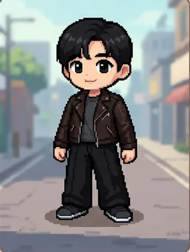
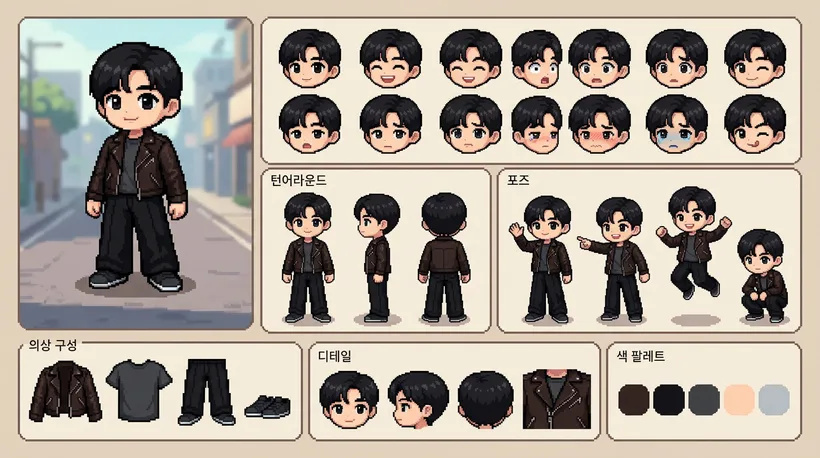
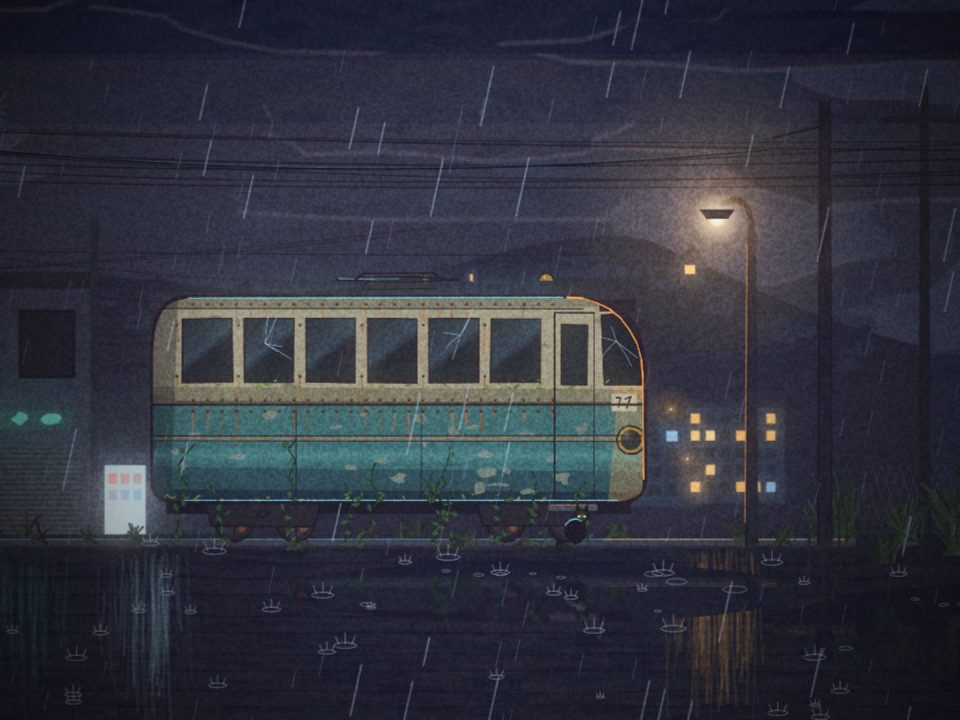
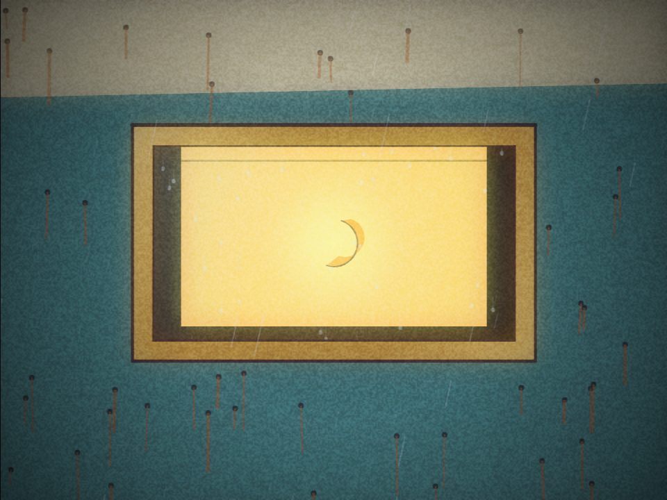
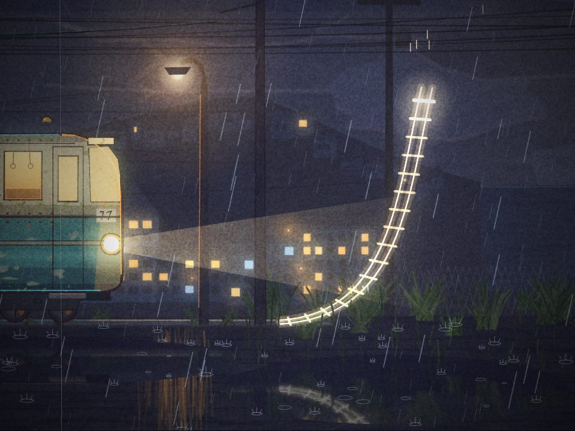
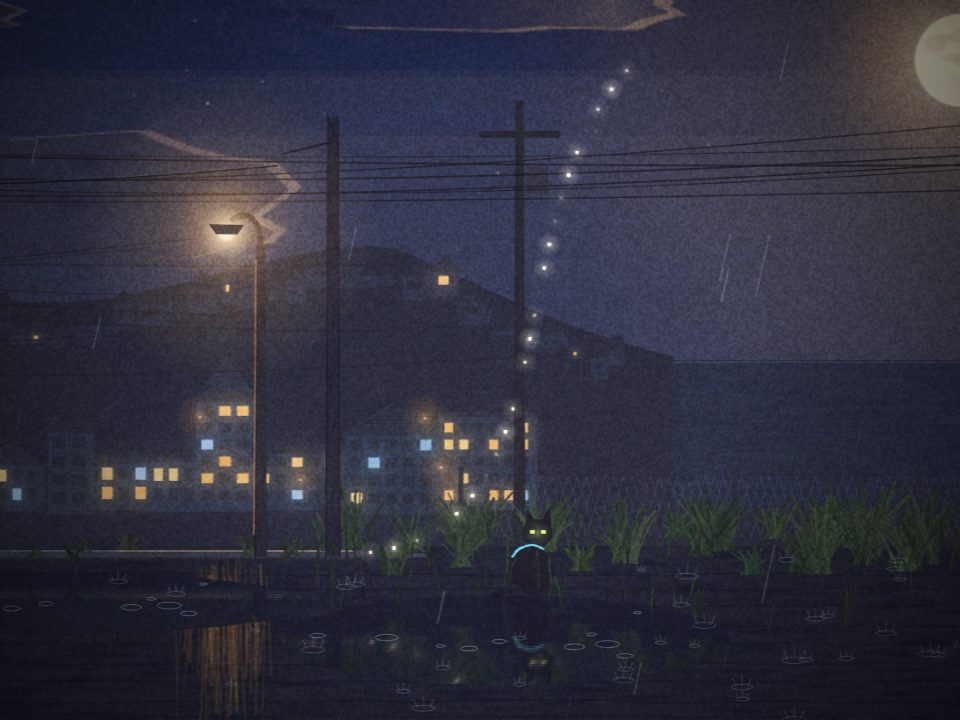

한음쌤의 영상 실습
영상의 구조를 이해하고, Google Flow로
나만의 캐릭터 1분 영상을 완성합니다.

이론 3개 세션 → AI 원리 → Flow 실습
프레임 · 샷 · 신 · 테이크
샷 사이즈 · 앵글 · 카메라 무빙
구도와 빛 · 편집 · 소리
기준 이미지와 일관성
캐릭터 한 장으로 1분 영상 + 코드로 영상 만들기
영상 제작 기초
정지된 사진 여러 장이 빠르게 이어져 움직이는 것처럼 보이는 것
넘기는 그림책
모든 신이 모여 완성되는 하나의 이야기
같은 장소 · 같은 시간에 일어나는 샷들의 묶음
카메라가 켜지고 꺼질 때까지 끊김 없이 찍힌 한 덩어리
영상의 사진 한 장
같은 샷을 다시 찍은
시도 번호
1초에 들어가는 프레임 수가 영상의 느낌을 결정해요
수업 영상 기본값
슬로모션용
같은 샷을 여러 번 촬영
샷 3번을 4번 찍었다면
편집할 때는
촬영 표기 예시
장소나 시간이 바뀌면 새로운 신이 시작된다.
신 하나는 여러 개의 샷으로 이루어진다.
1분짜리 학교 소개 영상을 하나의 구조로 분해해 보기
만들기 전에 정해야 할 세 가지
FHD 1080p (기본)
4K
16:9 유튜브 · 수업 화면
9:16 쇼츠 · 릴스
MP4가 가장 범용적
핵심 정리
테이크 = 좋은 샷을 고르기 위한 시도
프레임이 모여 샷, 샷이 모여 신, 신이 모여 영상.
샷 사이즈 · 앵글 · 카메라 무빙
같은 장면, 다른 느낌을 만드는 세 가지 선택인물과 배경을 얼마나 담을지 결정
위치와 높이에 따라 느낌이 달라짐
카메라의 움직임을 어떻게 줄지 결정
상황 · 메시지에 따라 담는 범위를 선택해요
장소 전체를 담아 여기가 어디인지 알려줘요
전신을 담아 상황과 동작을 보여줘요
가슴 위까지 담아 설명, 발표, 인터뷰에 좋아요
얼굴이나 손을 가까이 담아 감정과 디테일을 강조해요
넓은 장면에서 시작해 중간 화면을 거쳐 가까운 장면으로 자연스럽게 전환하세요
다양한 크기의 화면을 연결하면 몰입감이 높아져요.
카메라 높이가 느낌을 바꿉니다
눈높이 · 자연스럽고 편안함 (기본값)
아래에서 위로 · 크고 당당하게
위에서 아래로 · 작고 귀엽게, 전체를 내려다봄
제자리에서 좌우로 고개 돌리기
공간 훑기
제자리에서 위아래로 고개 들기
높이 강조
카메라가 직접 다가가기·물러나기
집중과 여운
피사체를 나란히 따라가기
움직임을 함께
둘 다 가까워지지만, 방식이 다릅니다
배경도 함께 납작하게 커짐
입체감 있고 영화 같은 느낌
핵심 정리
구도와 빛 · 편집 · 소리
잘 찍은 컷을 좋은 영상으로 바꾸는 마지막 단계교차점에 두면 안정적이고 보기 좋아요
빛이 등 뒤에서 비추면 얼굴이 어둡습니다
밝고 선명함
얼굴이 어두움
역광은 감성 연출용으로만, 의도해서 사용해요.
필요 없는 부분을 잘라내고 이어 붙이기
핵심 장면만 남기기
말이 끝나면 바로 다음 컷으로
A롤과 B롤을 함께 써야 영상이 더 풍성해져요
설명은 소리로 들리고 화면은 B롤로 덮으면, 지루하지 않고 이해도 높아집니다.
시간이나 장소가 바뀔 때만
초보 티가 난다
조용한 곳에서 마이크 가까이
말할 때는 볼륨을 낮추기
장면을 살리는 포인트
아이디어가 완성된 영상이 되기까지, 5단계를 차례로 거쳐요
콘티
사이즈 · 앵글 · 무빙
구도 · 빛
컷 편집 · B롤
소리 · 자막 · 출력
핵심 정리
일관성 있는 AI 영상
하지만 인물과 배경이 컷마다 흔들릴 수 있어요.
모습과 분위기를 안정적으로 이어가요.
글로만 만들면
얼굴도, 옷도, 배경도 바뀝니다.
컷은 예뻐도, 영상은 이어지지 않아요.
컷 1
컷 2
컷 3
기준 이미지 하나를
먼저 만듭니다.
기준을 세우고 → 장면을 만들고 → 움직임과 소리를 더한다
나이 · 표정 · 옷차림
사진 · 3D · 일러스트
교실 · 운동장 · 우주
전신 · 반신 · 카메라 각도

이미지는 그대로. 움직임만 지시합니다.
목소리 속도와 감정을 맞춰요.
수업 흐름에 맞게 정리해요.
만들기 · 저장 · 편집 · 공유
예) Google Flow, Gemini 앱
이미지 · 영상 · 음성 생성
예) 나노바나나(이미지), Veo 3.1(영상)
한 플랫폼 안에서도 모델을 바꿔 고를 수 있어요. Flow에서 Veo 3.1 Lite·Fast·Quality를 고르는 것처럼요.
등장해 학습 질문을 던져요.
를 더해 한 편의 이야기로 완성해요.
핵심 정리
AI 영상의 품질은 일관성에서 갈리고, 일관성은 기준 이미지에서 시작된다.
이미지 생성 · 움직임 · 편집, 세 가지를 한 화면에서 연결합니다
캐릭터와 장면 만들기
한 장에 자연스러운 움직임 + 소리
클립 이어 붙이고 내보내기
자막·배경음악이 필요하면 내보낸 파일을 브루·캡컷 등 편집 앱에서 마무리해요.
나노바나나로 캐릭터·시작 장면
쉽지만 캐릭터가 바뀌기 쉬움
참고 이미지를 @이름으로 불러와 일관성 유지
시작(·끝) 이미지 사이의 움직임
8초 뒤에 다음 장면 덧붙이기
순서·자르기·내보내기
| 항목 | 크레딧 | 무료 50이면 |
|---|---|---|
| 매일 무료 | 하루 50 (이월 안 됨) | — |
| 이미지 나노바나나 | 차감 없음으로 안내 | 여러 장 OK |
| Veo 3.1 Lite | 클립당 10 | 약 5개 |
| Veo 3.1 Fast | 클립당 20 | 약 2개 |
| Veo 3.1 Quality | 클립당 100 | 불가 |
같은 인물도 화풍에 따라 영상의 온도가 달라집니다
3D animated film style, soft lighting
watercolor illustration
flat 2D vector illustration
스타일을 프롬프트 맨 앞에 두면 그림체가 흔들리지 않아요.
특징을 고정하면 장면이 바뀌어도 같은 인물로 이어집니다
Flow는 클립(Veo 최대 8초)을 이어 붙여요 → 씬 하나 = 클립 하나
기준 캐릭터의 특징은 그대로, 장소와 행동만 바꿉니다
유튜브는 가로, 피드는 정사각, 쇼츠는 세로
유튜브 · 수업
학급 피드
쇼츠 · 릴스
작고 명확한 동작 한 가지가 가장 자연스럽습니다
캐릭터 재료 + @이름 → 가장 일관됨
STEP 2+ 장면 이미지를 시작 프레임으로
캐릭터 없는 배경 씬에만
문제를 더 구체적으로 말하면 결과가 바로 달라집니다
| 문제 | 이렇게 요청 | 프롬프트에 덧붙이기 |
|---|---|---|
| 손이 뒤틀려요 | 동작을 하나로 줄이고 손을 작게 | one simple action, natural hands |
| 얼굴이 달라져요 | 카메라 고정 + 고개 움직임 최소화, 재료 다시 첨부 | static camera, same face as @이름 |
| 화면이 흔들려요 | 줌·회전 없이 고정 숏으로 요청 | static camera, no zoom, no rotation |
| 자막·글자가 생겨요 | 글자가 들어갈 물건을 빼고 금지 문장 유지 | no subtitles, no on-screen text |
| 대사가 잘려요 | 대사를 20자 안쪽으로 줄이거나 씬을 둘로 | says in Korean: "짧은 한 문장" |
목소리 · 자막 · 음악을 얹고 1분 영상으로 내보냅니다
Veo는 대사를 영상과 함께 만들어요. 숫자·영어는 한글 소리대로.
한 줄 15자 안팎. 자막은 편집 앱에서 직접.
장면 빌더에서 순서·자르기 → 한 파일로 저장.
사진 한 장을 5초의 환영 장면으로 바꿔 보세요
시작 프레임으로
아침 햇살, 천천히 돌리 인
@캐릭터가 손 흔들며 인사
Flow: 프레임으로 영상 → 학교 사진을 시작 프레임 · 재료에 @캐릭터 · Veo 3.1 Lite
같은 캐릭터로 감정만 바꿔 세 가지 반응을 만듭니다
"안녕!" 손 흔들기
두 팔 번쩍, 점프
눈웃음, 박수
Flow: 재료로 영상 · 1:1 비율 · 단색 배경 · 카메라 고정 · 4초 안팎
| 🎬 영상 모델 | |
|---|---|
| Veo 3.1 | Flow 기본 · 영상+소리 함께 · Lite/Fast/Quality |
| Gemini Omni Flash | 캐릭터 모습·목소리 일관성, 영상 편집 |
| Kling 3.0 | 디테일·가성비 평가 |
| Seedance 2.0 | 립싱크, 여러 참고 이미지 |
| 🖼 이미지 모델 | |
|---|---|
| 나노바나나 | 캐릭터 일관성 · Flow 안에서 사용 |
| GPT Image | ChatGPT · 대화로 고쳐 나가기 |
| FLUX 3 | 참고 이미지 여러 장 |
| Midjourney | 보기 좋은 결과 · 유료 |
버전·요금은 자주 바뀌어요. 출처와 확인 필요 항목은 모델 비교 페이지에 정리했습니다.
2D·3D 애니메이션 기준 실측 비교 · PixVerse 크레딧 환산(1크레딧 ≈ 70원)
빗금 = 범위로만 알려진 값 · 출처: AI 아스트라 「AI 영상 8종 끝장 비교」 · 플랫폼마다 요금이 달라요 · Veo 3.1은 비교에 없음
평가 기준: 캐릭터 일관성 · 모션 블러/깨짐 · 감정·물리 반응 · 장르 구현도
| 모델 | 2D 일본 애니메이션 | 3D 애니메이션 |
|---|---|---|
| Seedance 2.5 | 극장판급 연출, 바람·머리카락 물리, BGM·효과음 강약 | 압도적 1위 · 문어·빗자루 비행 같은 복잡한 물리도 소화 |
| Wan 2.1 Prime | 최대 이변 · 시댄스 2.5에 근접, 모션 블러 적고 가성비 최고 | 단순 컷은 준수, 3D 속도감은 정체 |
| Kling 4.0 | 플래시 애니메이션 느낌, 액션 모션 블러 | 단순 씬은 괜찮지만 물체가 많으면 형태 무너짐 |
| 그 밖 | Minimax H3 방향 인지 취약(로봇 역주행) · Flux 3 에셋 튐 · Gemini Omni 1.1 Flash 깔끔하지만 10초 제한 | |
비싼 모델이 늘 정답은 아니에요. 장르와 분량으로 고르세요.
시댄스 절반 이하 비용으로 최상위권 2D 작화
초당 157원, 무난한 3D 영상 양산
복잡한 서사·여러 캐릭터, 연출력·소리 품질 독보적
Claude · Gemini에게 코드를 쓰게 해서
한 덩어리로 생성 → 일부만 고치기 어려워 다시 깎아야 함 (크레딧)
블록(코드 한 줄)만 바꿔 끼우면 끝 → 수정 비용 거의 0
AI가 그림을 "생성"하는 게 아니라, 움직임을 "설계도(코드)"로 씁니다
장면·글자·색·시간
CSS·JS 애니메이션
Claude 아티팩트 · Gemini 캔버스
화면 녹화 또는 렌더링
종이비행기와 엔딩 크레딧은 이미지·영상 파일 없이 CSS 몇 줄로 움직입니다.
| 만들 것 | 추천 | 이유 |
|---|---|---|
| 캐릭터 연기·감정 | 🗿 Flow | 표정·몸짓·빛의 자연스러움은 영상 모델이 압도적 |
| 제목·자막·엔딩 크레딧 | 🧱 코드 | AI 영상은 글자가 깨지기 쉬움 → 코드는 한 글자도 안 틀림 |
| 그래프·인포그래픽 | 🧱 코드 | 숫자가 정확하고, 값만 바꿔 다시 만들 수 있음 |
| 수업 개념 애니메이션 | 🧱 코드 | 물의 순환·분수·지구 공전처럼 규칙이 있는 움직임 |
| 졸업·행사 영상 | 🗿 + 🧱 | 장면은 Flow, 타이틀·이름 크레딧은 코드로 만들어 편집 앱에서 합치기 |
Claude 또는 Gemini(캔버스)에 그대로 붙여 넣으세요
다시 만들지 말고, 바꿀 것만 한 줄로 말하세요
나머지는 그대로 유지
CSS 색 값 몇 개만 바뀜
애니메이션 시간만 조정
Windows: Win + Alt + R (게임 바)
Mac: Shift + ⌘ + 5
브라우저를 전체 화면(F11)으로 두고 녹화
Remotion(React), HyperFrames(HTML) 같은 도구로 코드를 프레임 단위 MP4로 출력
그래프·도형 변환 애니메이션에 강한 파이썬 도구. "Manim 코드로 만들어 줘"라고 요청
렌더링 도구는 설치가 필요해요. 수업에서는 화면 녹화로 시작하는 것을 추천합니다.
80초 · HTML 파일 하나 · 이미지·음원 파일 0개 · 그림·움직임·소리 모두 코드




항목마다 "코드에서 무엇을 할지"가 하나씩 대응됩니다
하고 싶은 장면은 한국어 한 문장으로, 그림 규칙은 레퍼런스 프롬프트로
"겨울밤 눈 속에 잠든 구조 로봇이 아기 새를 구하는 60초"
"수채 그림책 느낌으로 우리 학교 교문에 봄이 오는 30초"
"종이 공작 느낌으로 물의 순환을 설명하는 40초 + 효과음"
한 번 잘 된 과정을 스킬로 저장하면, 다음엔 요청만 하면 같은 순서로 만들어 줍니다
80초 → 13컷, 감정 곡선
검증된 그림·필름·소리 엔진
무작위 프레임을 정지 화면으로
실패 사례 표로 빠르게
code-video.skill 파일의 Save skill 버튼.claude/skills/code-video에 두면 자동 인식핵심 정리
캐릭터의 연기는 Flow로, 글자·숫자·규칙 있는 움직임은 코드로. 두 가지를 편집 앱에서 합치면 완성.